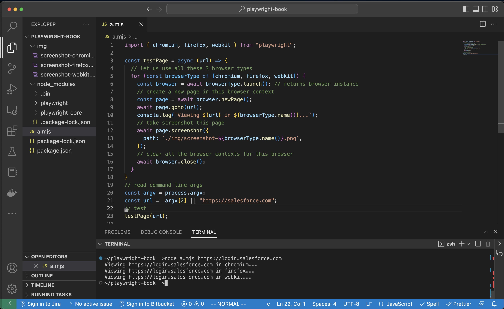

Chapter 1
What is Playwright?
Installing Playwright
mkdir playwright-book
cd playwright-book
npm init -y
Wrote to playwright-book/package.json:
{
"name": "playwright-book",
"version": "1.0.0",
"description": "",
"main": "index.js",
"scripts": {
"test": "echo \"Error: no test specified\" && exit 1"
},
"keywords": [],
"author": "",
"license": "ISC"
}
npm install playwright
added 2 packages, and audited 3 packages in 5s
found 0 vulnerabilities
.
├── node_modules
│ ├── playwright
│ │ ├── LICENSE
│ │ ├── NOTICE
│ │ ├── README.md
│ │ ├── cli.js
│ │ ├── index.d.ts
│ │ ├── index.js
│ │ ├── index.mjs
│ │ ├── install.js
│ │ └── package.json
│ └── playwright-core
│ ├── LICENSE
│ ├── NOTICE
│ ├── README.md
│ ├── ThirdPartyNotices.txt
│ ├── bin
│ │ ├── PrintDeps.exe
│ │ ├── README.md
│ │ ├── container_install_deps.sh
│ │ ├── container_landing.html
│ │ ├── container_novnc_proxy.js
│ │ ├── container_run_server.sh
│ │ ├── install_media_pack.ps1
│ │ ├── reinstall_chrome_beta_linux.sh
│ │ ├── reinstall_chrome_beta_mac.sh
│ │ ├── reinstall_chrome_beta_win.ps1
│ │ ├── reinstall_chrome_stable_linux.sh
│ │ ├── reinstall_chrome_stable_mac.sh
│ │ ├── reinstall_chrome_stable_win.ps1
│ │ ├── reinstall_msedge_beta_linux.sh
│ │ ├── reinstall_msedge_beta_mac.sh
│ │ ├── reinstall_msedge_beta_win.ps1
│ │ ├── reinstall_msedge_dev_linux.sh
│ │ ├── reinstall_msedge_dev_mac.sh
│ │ ├── reinstall_msedge_dev_win.ps1
│ │ ├── reinstall_msedge_stable_linux.sh
│ │ ├── reinstall_msedge_stable_mac.sh
│ │ └── reinstall_msedge_stable_win.ps1
│ ├── browsers.json
│ ├── cli.js
│ ├── index.d.ts
│ ├── index.js
│ ├── index.mjs
│ ├── lib
│ │ ├── androidServerImpl.js
│ │ ├── browserServerImpl.js
│ │ ├── cli
│ │ │ ├── cli.js
│ │ │ └── driver.js
│ │ ├── client
│ │ │ ├── accessibility.js
│ │ │ ├── android.js
│ │ │ ├── api.js
│ │ │ ├── artifact.js
│ │ │ ├── browser.js
│ │ │ ├── browserContext.js
│ │ │ ├── browserType.js
│ │ │ ├── cdpSession.js
│ │ │ ├── channelOwner.js
│ │ │ ├── clientHelper.js
│ │ │ ├── clientInstrumentation.js
│ │ │ ├── connection.js
│ │ │ ├── consoleMessage.js
│ │ │ ├── coverage.js
│ │ │ ├── dialog.js
│ │ │ ├── download.js
│ │ │ ├── electron.js
│ │ │ ├── elementHandle.js
│ │ │ ├── events.js
│ │ │ ├── fetch.js
│ │ │ ├── fileChooser.js
│ │ │ ├── frame.js
│ │ │ ├── harRouter.js
│ │ │ ├── input.js
│ │ │ ├── joiningEventEmitter.js
│ │ │ ├── jsHandle.js
│ │ │ ├── jsonPipe.js
│ │ │ ├── localUtils.js
│ │ │ ├── locator.js
│ │ │ ├── network.js
│ │ │ ├── page.js
│ │ │ ├── playwright.js
│ │ │ ├── selectors.js
│ │ │ ├── stream.js
│ │ │ ├── tracing.js
│ │ │ ├── types.js
│ │ │ ├── video.js
│ │ │ ├── waiter.js
│ │ │ ├── worker.js
│ │ │ └── writableStream.js
│ │ ├── common
│ │ │ ├── debugLogger.js
│ │ │ ├── errors.js
│ │ │ ├── netUtils.js
│ │ │ ├── socksProxy.js
│ │ │ ├── timeoutSettings.js
│ │ │ ├── types.js
│ │ │ └── userAgent.js
│ │ ├── containers
│ │ │ ├── docker.js
│ │ │ └── dockerApi.js
│ │ ├── generated
│ │ │ ├── consoleApiSource.js
│ │ │ ├── injectedScriptSource.js
│ │ │ ├── recorderSource.js
│ │ │ └── utilityScriptSource.js
│ │ ├── grid
│ │ │ ├── githubGridFactory.js
│ │ │ ├── gridAgent.js
│ │ │ ├── gridBrowserWorker.js
│ │ │ ├── gridServer.js
│ │ │ └── simpleGridFactory.js
│ │ ├── image_tools
│ │ │ ├── colorUtils.js
│ │ │ ├── compare.js
│ │ │ ├── imageChannel.js
│ │ │ └── stats.js
│ │ ├── inProcessFactory.js
│ │ ├── inprocess.js
│ │ ├── outofprocess.js
│ │ ├── protocol
│ │ │ ├── debug.js
│ │ │ ├── serializers.js
│ │ │ ├── transport.js
│ │ │ ├── validator.js
│ │ │ └── validatorPrimitives.js
│ │ ├── remote
│ │ │ ├── playwrightConnection.js
│ │ │ └── playwrightServer.js
│ │ ├── server
│ │ │ ├── accessibility.js
│ │ │ ├── android
│ │ │ │ ├── android.js
│ │ │ │ └── backendAdb.js
│ │ │ ├── artifact.js
│ │ │ ├── browser.js
│ │ │ ├── browserContext.js
│ │ │ ├── browserType.js
│ │ │ ├── chromium
│ │ │ │ ├── appIcon.png
│ │ │ │ ├── chromium.js
│ │ │ │ ├── chromiumSwitches.js
│ │ │ │ ├── crAccessibility.js
│ │ │ │ ├── crApp.js
│ │ │ │ ├── crBrowser.js
│ │ │ │ ├── crConnection.js
│ │ │ │ ├── crCoverage.js
│ │ │ │ ├── crDevTools.js
│ │ │ │ ├── crDragDrop.js
│ │ │ │ ├── crExecutionContext.js
│ │ │ │ ├── crInput.js
│ │ │ │ ├── crNetworkManager.js
│ │ │ │ ├── crPage.js
│ │ │ │ ├── crPdf.js
│ │ │ │ ├── crProtocolHelper.js
│ │ │ │ ├── crServiceWorker.js
│ │ │ │ ├── defaultFontFamilies.js
│ │ │ │ └── videoRecorder.js
│ │ │ ├── console.js
│ │ │ ├── cookieStore.js
│ │ │ ├── debugController.js
│ │ │ ├── debugger.js
│ │ │ ├── deviceDescriptors.js
│ │ │ ├── deviceDescriptorsSource.json
│ │ │ ├── dialog.js
│ │ │ ├── dispatchers
│ │ │ │ ├── androidDispatcher.js
│ │ │ │ ├── artifactDispatcher.js
│ │ │ │ ├── browserContextDispatcher.js
│ │ │ │ ├── browserDispatcher.js
│ │ │ │ ├── browserTypeDispatcher.js
│ │ │ │ ├── cdpSessionDispatcher.js
│ │ │ │ ├── consoleMessageDispatcher.js
│ │ │ │ ├── debugControllerDispatcher.js
│ │ │ │ ├── dialogDispatcher.js
│ │ │ │ ├── dispatcher.js
│ │ │ │ ├── electronDispatcher.js
│ │ │ │ ├── elementHandlerDispatcher.js
│ │ │ │ ├── frameDispatcher.js
│ │ │ │ ├── jsHandleDispatcher.js
│ │ │ │ ├── jsonPipeDispatcher.js
│ │ │ │ ├── localUtilsDispatcher.js
│ │ │ │ ├── networkDispatchers.js
│ │ │ │ ├── pageDispatcher.js
│ │ │ │ ├── playwrightDispatcher.js
│ │ │ │ ├── selectorsDispatcher.js
│ │ │ │ ├── streamDispatcher.js
│ │ │ │ ├── tracingDispatcher.js
│ │ │ │ └── writableStreamDispatcher.js
│ │ │ ├── dom.js
│ │ │ ├── download.js
│ │ │ ├── electron
│ │ │ │ ├── electron.js
│ │ │ │ └── loader.js
│ │ │ ├── fetch.js
│ │ │ ├── fileChooser.js
│ │ │ ├── firefox
│ │ │ │ ├── ffAccessibility.js
│ │ │ │ ├── ffBrowser.js
│ │ │ │ ├── ffConnection.js
│ │ │ │ ├── ffExecutionContext.js
│ │ │ │ ├── ffInput.js
│ │ │ │ ├── ffNetworkManager.js
│ │ │ │ ├── ffPage.js
│ │ │ │ └── firefox.js
│ │ │ ├── formData.js
│ │ │ ├── frames.js
│ │ │ ├── har
│ │ │ │ ├── harRecorder.js
│ │ │ │ └── harTracer.js
│ │ │ ├── helper.js
│ │ │ ├── index.js
│ │ │ ├── input.js
│ │ │ ├── instrumentation.js
│ │ │ ├── isomorphic
│ │ │ │ ├── cssParser.js
│ │ │ │ ├── cssTokenizer.js
│ │ │ │ ├── locatorGenerators.js
│ │ │ │ ├── locatorParser.js
│ │ │ │ ├── selectorParser.js
│ │ │ │ └── utilityScriptSerializers.js
│ │ │ ├── javascript.js
│ │ │ ├── macEditingCommands.js
│ │ │ ├── network.js
│ │ │ ├── page.js
│ │ │ ├── pipeTransport.js
│ │ │ ├── playwright.js
│ │ │ ├── progress.js
│ │ │ ├── protocolError.js
│ │ │ ├── recorder
│ │ │ │ ├── codeGenerator.js
│ │ │ │ ├── csharp.js
│ │ │ │ ├── java.js
│ │ │ │ ├── javascript.js
│ │ │ │ ├── language.js
│ │ │ │ ├── python.js
│ │ │ │ ├── recorderActions.js
│ │ │ │ ├── recorderApp.js
│ │ │ │ ├── recorderUtils.js
│ │ │ │ └── utils.js
│ │ │ ├── recorder.js
│ │ │ ├── registry
│ │ │ │ ├── browserFetcher.js
│ │ │ │ ├── dependencies.js
│ │ │ │ ├── index.js
│ │ │ │ ├── nativeDeps.js
│ │ │ │ └── oopDownloadMain.js
│ │ │ ├── screenshotter.js
│ │ │ ├── selectors.js
│ │ │ ├── socksInterceptor.js
│ │ │ ├── trace
│ │ │ │ ├── recorder
│ │ │ │ │ ├── snapshotter.js
│ │ │ │ │ ├── snapshotterInjected.js
│ │ │ │ │ └── tracing.js
│ │ │ │ ├── test
│ │ │ │ │ └── inMemorySnapshotter.js
│ │ │ │ └── viewer
│ │ │ │ └── traceViewer.js
│ │ │ ├── transport.js
│ │ │ ├── types.js
│ │ │ ├── usKeyboardLayout.js
│ │ │ └── webkit
│ │ │ ├── webkit.js
│ │ │ ├── wkAccessibility.js
│ │ │ ├── wkBrowser.js
│ │ │ ├── wkConnection.js
│ │ │ ├── wkExecutionContext.js
│ │ │ ├── wkInput.js
│ │ │ ├── wkInterceptableRequest.js
│ │ │ ├── wkPage.js
│ │ │ ├── wkProvisionalPage.js
│ │ │ └── wkWorkers.js
│ │ ├── third_party
│ │ │ ├── diff_match_patch.js
│ │ │ ├── http_proxy.js
│ │ │ └── pixelmatch.js
│ │ ├── utils
│ │ │ ├── comparators.js
│ │ │ ├── eventsHelper.js
│ │ │ ├── fileUtils.js
│ │ │ ├── hostPlatform.js
│ │ │ ├── httpServer.js
│ │ │ ├── index.js
│ │ │ ├── isomorphic
│ │ │ │ ├── locatorUtils.js
│ │ │ │ └── stringUtils.js
│ │ │ ├── linuxUtils.js
│ │ │ ├── manualPromise.js
│ │ │ ├── mimeType.js
│ │ │ ├── multimap.js
│ │ │ ├── processLauncher.js
│ │ │ ├── processLauncherCleanupEntrypoint.js
│ │ │ ├── spawnAsync.js
│ │ │ ├── stackTrace.js
│ │ │ ├── timeoutRunner.js
│ │ │ ├── zipFile.js
│ │ │ └── zones.js
│ │ ├── utilsBundle.js
│ │ ├── utilsBundleImpl.js
│ │ ├── webpack
│ │ │ ├── htmlReport
│ │ │ │ └── index.html
│ │ │ ├── recorder
│ │ │ │ ├── assets
│ │ │ │ │ ├── codicon.dcd00fb4.ttf
│ │ │ │ │ ├── index.09e28085.css
│ │ │ │ │ └── index.9ed72def.js
│ │ │ │ ├── icon-16x16.png
│ │ │ │ ├── icon-192x192.png
│ │ │ │ ├── icon-256x256.png
│ │ │ │ ├── icon-32x32.png
│ │ │ │ ├── icon-384x384.png
│ │ │ │ ├── icon-512x512.png
│ │ │ │ └── index.html
│ │ │ └── traceViewer
│ │ │ ├── codicon.dcd00fb4.ttf
│ │ │ ├── icon-16x16.png
│ │ │ ├── icon-192x192.png
│ │ │ ├── icon-256x256.png
│ │ │ ├── icon-32x32.png
│ │ │ ├── icon-384x384.png
│ │ │ ├── icon-512x512.png
│ │ │ ├── index.74859fca.js
│ │ │ ├── index.a3a59263.css
│ │ │ ├── index.html
│ │ │ └── sw.bundle.js
│ │ ├── zipBundle.js
│ │ └── zipBundleImpl.js
│ ├── package.json
│ └── types
│ ├── protocol.d.ts
│ ├── structs.d.ts
│ └── types.d.ts
├── package-lock.json
└── package.json
38 directories, 299 files
Hello World
- Let us write a simple function which loads a given url and takes screenshots in all 3 browser types supported by playwright in the file a.mjs (javascript module)
import { chromium, firefox, webkit } from "playwright";
const testPage = async (url) => {
// let us use all these 3 browser types
for (const browserType of [chromium, firefox, webkit]) {
const browser = await browserType.launch(); // returns browser instance
// create a new page in this browser context
const page = await browser.newPage();
await page.goto(url);
console.log(`Viewing ${url} in ${browserType.name()}...`);
// take screenshot this page
await page.screenshot({
path: `./img/screenshot-${browserType.name()}.png`,
});
// clear all the browser contexts for this browser
await browser.close();
}
}
// read command line args
const argv = process.argv;
const url = argv[2] || "https://salesforce.com";
// test
testPage(url);

Resources
Videos
- Playwright: A New Test Automation Framework for the Modern Web
- The Four Futuristic Features Of Playwright